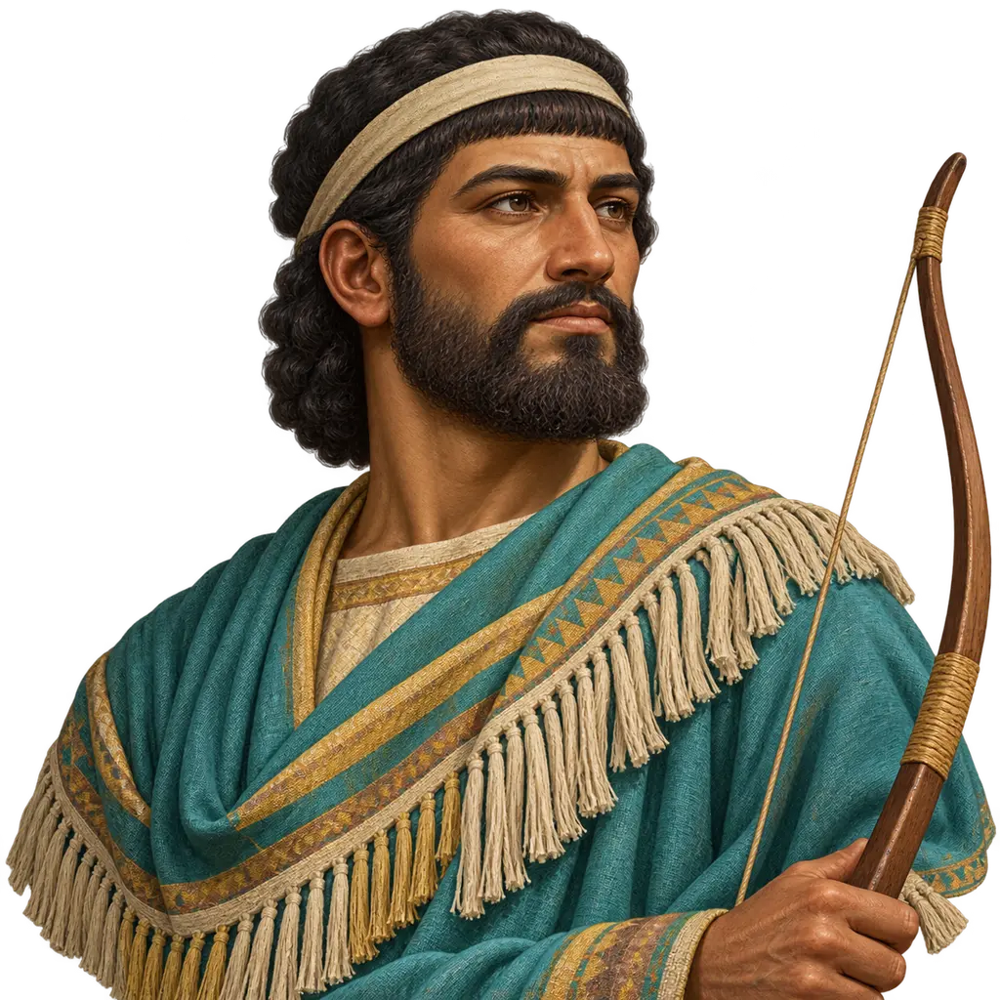
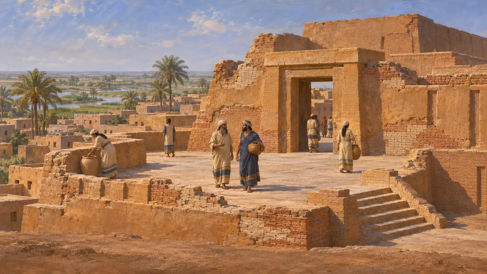
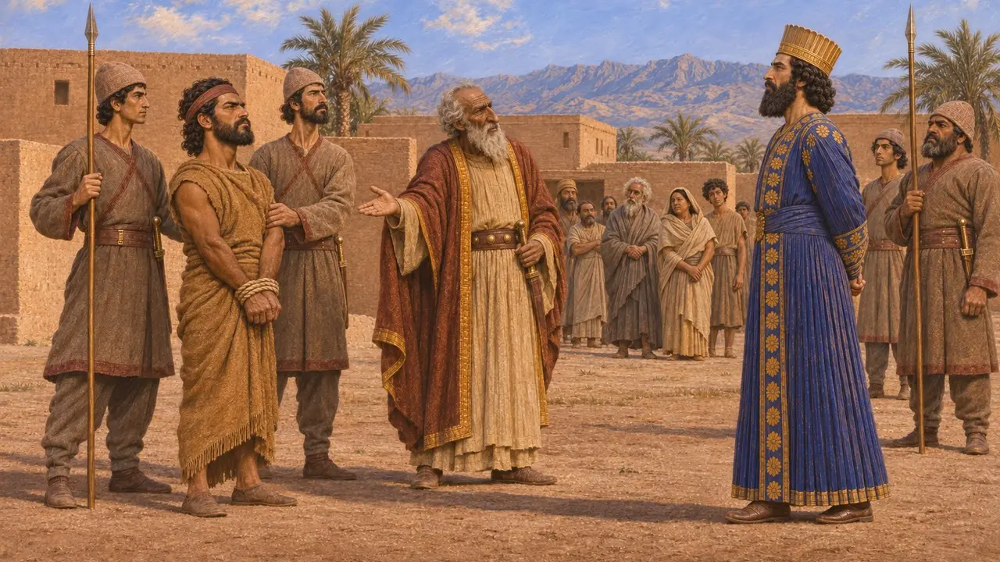
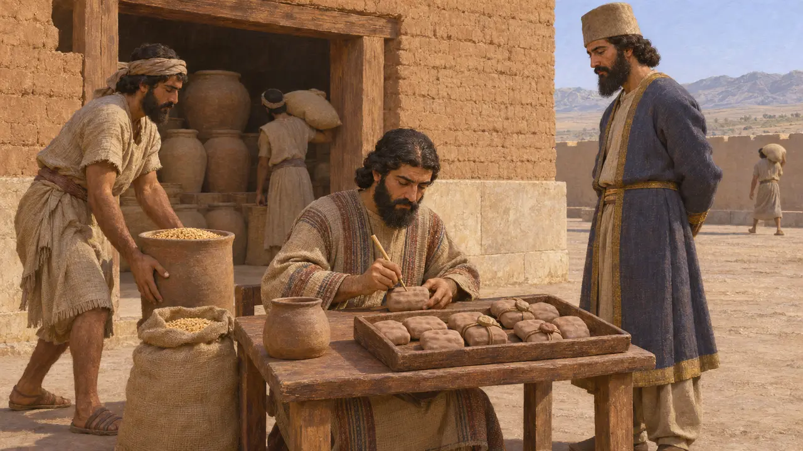
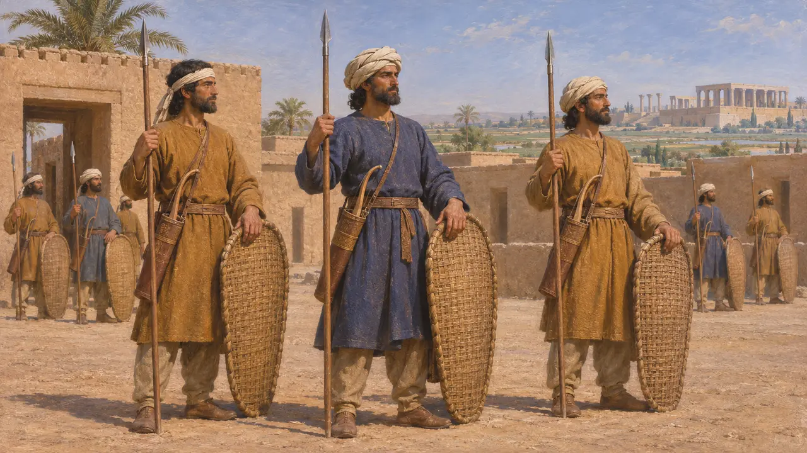
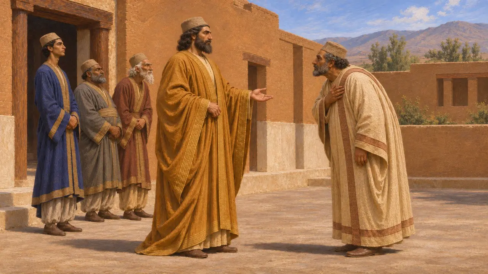
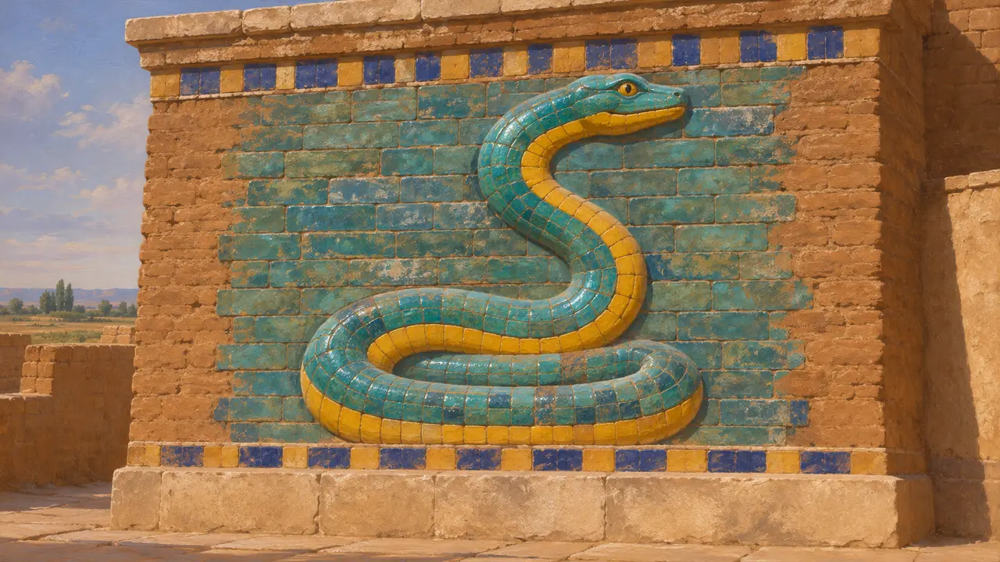

عیلامیان
مردم کهن شوش و دشت آن، زیر فرمان پارسیان در سدهٔ ششم پ.م.
در بازی: مرحلهٔ ۱: آرامگاه بنیانگذار، مرحلهٔ ۴: صفه، مرحلهٔ ۵: منشور، مرحلهٔ ۷: سارد میسوزد
عیلامیان وارثان پادشاهیای بودند بسیار کهنتر از پارس، با کانونی در شوش و کوهستانهای انشان. عیلام در سالهای 522 تا 519 پ.م. سه بار بر داریوش شورید، با این حال زبانش زبان کاری دستگاه دیوانی پارسیان شد. آیین شاهی، پوشاک و رسوم دبیری پارسیان احتمالاً وام بسیاری به عیلام داشت، هرچند میزان آن هنوز محل بحث است.
در بازی: بازی عیلامیان را شریکان تجاری پیرامون شوش و شورشیان در شوش نشان میدهد. در تاریخ، عیلام از ایالتهای کانونی شاهنشاهی بود، نه شریکی بیرونی. بیستون سه شورش عیلامی را در 522 تا 519 پ.م. ثبت کرده است.

پادشاهیای کهن پیش از پارس
در اسنادعیلام خود را هلتمتی مینامید و پارسیان آن را اووجه میخواندند. شاهان آن از شوش در دشت پست و از انشان در کوهستانی که بعدها پارس شد فرمان میراندند. سالنامههای آشوری آوردهاند که آشوربانیپال حدود سال 646 پ.م. شوش را غارت کرد. پس از آن پادشاهیهای کوچکتر عیلامی نو بر جای ماندند و شوش احتمالاً در دوران شاهی کوروش به فرمان پارسیان درآمد، هرچند هیچ متنی زمان یا چگونگی آن را ثبت نکرده است.
D. T. Potts, The Archaeology of Elam, 1999

سه شورش بر ضد داریوش
در اسنادسنگنبشتهٔ داریوش در بیستون میگوید که پس از مرگ گئومات، عیلام به رهبری آثرینه شورید؛ او را دستبسته نزد داریوش آوردند و کشتند. سپس مرتیه، مردی پارسی، ادعا کرد که ایمنیش، شاه عیلام، است؛ اما عیلامیان از نزدیک شدن داریوش هراسیدند، او را گرفتند و کشتند. داریوش در ستون پنجم، که بعدتر افزوده شد، میگوید که اثمئیته در سالهای دوم و سوم شاهی او شورش سومی را رهبری کرد. گئوبروه عیلامیان را شکست داد و اثمئیته را نزد داریوش آوردند و کشتند.
DB §16-17, §22-23, §71

زبان دیوانهای پارسی
در اسنادبیشترِ هزاران لوح باروی تخت جمشید، که کمابیش سالهای 509 پ.م. تا 494 پ.م. را دربرمیگیرند، به زبان عیلامی نوشته شدهاند. این لوحها جیرهها، سفرها و نذورات را ثبت میکنند، از جمله نذوراتی برای ایزدان عیلامی چون هومبان در کنار ایزدان ایرانی. متن عیلامی بیستون احتمالاً نخستین نسخهای بود که بر سنگ کنده شد. عیلامی در کتیبههای شاهی در کنار فارسی باستان و بابلی جای دارد.
W. Henkelman, The Other Gods Who Are, 2008

کیسیان در نوشتههای هرودوت
روایت باستانیهرودوت نام عیلام را به کار نمیبرد. او از کیسیان سخن میگوید که شوش شهر اصلی آنان بود. او شوش و سرزمین کیسیان را یک بخش مالیاتی میشمارد که 300 تالان نقره میپرداخت. به گفتهٔ او، در سپاه خشایارشا کیسیان همچون پارسیان مسلح بودند، اما به جای کلاه نمدی، سربند یا دستار میبستند.
Herodotus 3.91; 7.62

پارسیان تا چه اندازه عیلامی بودند
مورد مناقشهکوروش در استوانهٔ کوروش خود را شاه انشان خواند، که عنوانی کهن از شاهان عیلامی بود. برخی تاریخنگاران بر این باورند که شاهی پارسی از آمیزش دیرپای تازهواردان ایرانی و عیلامیان در کوهستانها برآمد. دیگران بر گسستی آشکارتر تأکید میکنند و وامگیریهای عیلامی را گزینشهایی پسین میدانند. ردای بلند پارسی و برخی آیینهای دربار را اغلب به عیلام بازمیگردانند، اما اندازهٔ این وام هنوز محل بحث است.
P. Briant, From Cyrus to Alexander, 2002

نشانِ کنار نام
در اسنادنشان بازی برای ایلام ماری برخاسته است، نقشمایهی تختها، مهرها و هنر پرستشگاههای ایلامی در دو هزار سال، به رنگ فیروزهای و زردِ آجرهای لعابدار شوش. هیچ درفش جنگی ایلامی شناخته نیست؛ مار نمایندهی هنر خودِ آن سرزمین است، نه یک درفش.
P. O. Harper, J. Aruz and F. Tallon (eds), The Royal City of Susa, 1992
منابع
- DB (Behistun inscription, Darius I)
- W. Henkelman, The Other Gods Who Are, 2008
- D. T. Potts, The Archaeology of Elam, 1999
- P. Briant, From Cyrus to Alexander, 2002
- Herodotus 3.91; 7.62
- Cyrus Cylinder